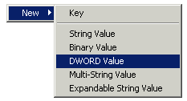
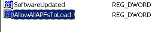
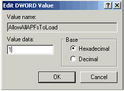

This procedure describes how to load a previous APF version (a lower revision number) on a DxI instrument and how to delete UDRs on an integrated DxI instrument.
For integrated DxI instruments only: Recently released APFs have multiple dilution assays in preparation for the release of the DxI on-board dilution feature. The DxC instrument has a UDR (user-defined reagent) feature that allows the customer to set up and configure non-BCI tests. If the DxC software is lower than V5.0 and the UDRs are enabled, then the AAF load fails if the limit of 350 chemistries is exceeded. This happens after a successful APF load on the DxI, when attempting the AAF upgrade on the DxC. Before proceeding with the AAF upgrade, delete the UDRs from the DxC or restore the APF to the previous version. The system will not process samples until the APF and AAF versions of the DxI and DxC match.
Note: DxC software V5.0 and above increases the chemistry limit from 350 to 600 (500 BCI chemistries and 100 UDRs).
When to Perform
Instrument
When to Perform
Integrated DxI (660i, 680i, 860i, 880i)
A
Chemistry update aborted, too many UDR chemistries, delete and retry update error message is received on the DxC console while attempting to update the AAF and these conditions are true:
DxC software V5.0 or above is not available.
The customer is unwilling to delete the required number of UDRs.
Note: If the customer is willing to delete UDRs, then proceed to the
Software: Deleting UDRs procedure.
Non-integrated DxI
A customer wants a previous APF version loaded. Examples include:
RUO (Research Use Only) APF overwritten by IVD APF.
RUO APF does not load because the version is lower than the APF version currently installed.
To restore a deleted assay.
Note: A backup made prior to loading the APF can also be used to restore the system to a prior APF version.
Right-click on the right side of the split screen, select
New > DWORD Value, and change the name of the new entry to
AllowAllAPFsToLoad.
Note: The name is case-sensitive.


Right-click the
AllowAllAPFsToLoad entry, select
Modify, change the entry to
1, and then select
OK.

Load the desired APF version.
Note: If the user interface is not launched, then select
Start > Programs > NexGen > NexGenUI UD.
On the user interface Main Menu, select
ConfigureTests
Update APF, and then follow the instructions.
Delete the
AllowAllAPFsToLoad entry or change the entry back to
0.
Caution: If the entry is not deleted or changed to 0, it is possible to load any APF on the instrument - including APFs for other instrument models.
Close the registry editor.
If this instrument is an integrated DxI, then verify that the APF and AAF versions are compatible. If a
DxI tests are not runnable message is displayed on the DxC console, update the AAF.
If this instrument is a stand-alone DxI, then this procedure is complete.
For Windows 8:
Note: Software V5.3.1 or higher does not allow installation of a previous APF version without changing a registry setting.
Press
Windows key, type
regedit and open the program.
In the registry editor, navigate to
HKEY_LOCAL_MACHINE > SOFTWARE > Beckman > NexStep
Right-click on the right side of the split screen, select
New > DWORD Value, and change the name of the new entry to
AllowAllAPFsToLoad.
Note: The name is case-sensitive.
Right-click the
AllowAllAPFsToLoad entry, select
Modify, change the entry to
1, and then select
OK.
Load the desired APF version.
Note: If the user interface is not launched, then double-click the
NexGen Application short cut on the desktop or press
Windows key and select the
NexGenUI UD icon.
On the user interface Main Menu, select
Configure > Tests > Update APF, and then follow the instructions.
Delete the
AllowAllAPFsToLoad entry or change the entry back to
0.
Caution: If the entry is not deleted or changed to 0, it is possible to load any APF on the instrument - including APFs for other instrument models.
Close the registry editor.
If this instrument is an integrated DxI, then verify that the APF and AAF versions are compatible. If a DxI tests are not runnable message is displayed on the DxC console, update the AAF.
If this instrument is a stand-alone DxI, then this procedure is complete.